# On écarte les personnes qui déclarent plus de 10h de télévision par jour,
# puis on calcule la moyenne sur l'ensemble des enquêtés.
d |> mutate(heures.tv = if_else(heures.tv > 10, NA, heures.tv))
d |> summarise(
effectif = n(),
tv_moyenne_tous = mean(heures.tv, na.rm = TRUE)
)Représenter des données
L3 économie-finance
Reprise du chapitre 3
Le script suivant s’exécute sans erreur et sans avertissement. Pourtant, le commentaire qui l’accompagne est faux : le résultat ne correspond pas à ce qui est annoncé.
La fonction if_else() est nouvelle : elle remplace par une valeur manquante (NA) les heures de télévision supérieures à 10, et laisse les autres inchangées. Le reste ne fait appel qu’à ce que vous connaissez.
Trouvez ce qui ne va pas, corrigez le script, et expliquez en une ou deux phrases ce qui s’est passé. Il y a deux problèmes. Vous pouvez exécuter le code, mais cherchez d’abord en le lisant.
NoteCorrection
d_corrige <- d |> mutate(heures.tv = if_else(heures.tv > 10, NA_real_, heures.tv))
d_corrige |> summarise(
effectif = sum(!is.na(heures.tv)),
tv_moyenne = mean(heures.tv, na.rm = TRUE)
)# A tibble: 1 × 2
effectif tv_moyenne
<int> <dbl>
1 1991 2.23Deux erreurs se superposent.
D’abord, le mutate() n’est pas assigné. Le tableau modifié s’affiche, puis disparaît : d est inchangé, et le recodage annoncé n’a jamais lieu. Le summarise() porte donc sur les données d’origine.
Ensuite, l’effectif affiché est trompeur. n() compte toutes les lignes du tableau, soit 2000, alors que la moyenne, à cause de na.rm = TRUE, ne porte que sur les répondants. Pour afficher le nombre de personnes réellement prises en compte, il faut compter les valeurs non manquantes : sum(!is.na(heures.tv)).
Si vous n’aviez repéré aucun des deux problèmes, relisez la partie « Les erreurs silencieuses » du chapitre 3.
Pourquoi un graphique
Ce qu’un tableau ne dit pas
Au chapitre précédent, nous avons résumé l’âge des enquêtés :
d |> summarise(
moyenne = mean(age),
ecart_type = sd(age),
mediane = median(age)
)# A tibble: 1 × 3
moyenne ecart_type mediane
<dbl> <dbl> <dbl>
1 48.2 16.9 48Ces trois nombres ne disent pas tout. Quelle est la forme de la distribution ? Les âges sont-ils répartis régulièrement, ou concentrés autour de quelques valeurs ? Y a-t-il des valeurs aberrantes ? Voici la même variable représentée par un histogramme :
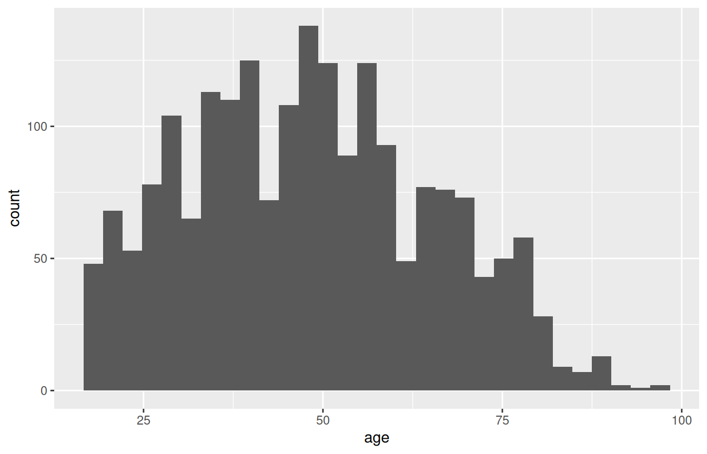
Deux variables qui ont la même moyenne et le même écart-type peuvent avoir des distributions très différentes. Un graphique permet de le voir d’un coup d’œil. C’est ce que nous allons apprendre à faire dans ce chapitre.
ggplot2
Nous utiliserons ggplot2, le paquet du tidyverse consacré aux graphiques. Il demande d’apprendre une petite syntaxe supplémentaire, mais celle-ci est cohérente : une fois les principes compris, on construit des graphiques complexes en assemblant des éléments simples.
Une de ses particularités est que les données d’un graphique sont toujours dans un tableau de données. ggplot2 est chargé par library(tidyverse) : votre script commence donc comme d’habitude.
library(tidyverse)
library(questionr)
data(hdv2003)
d <- as_tibble(hdv2003)Ce chapitre s’inspire du chapitre 8 de Barnier et Kauffmann (2023).
Les trois ingrédients d’un graphique
Les données
Un graphique commence par la fonction ggplot(), à laquelle on passe le tableau de données :
ggplot(d)Seul un cadre gris s’affiche : nous n’avons pas encore dit quoi représenter, ni comment.
La géométrie
Il faut ensuite choisir un type de représentation, appelé géométrie (geom) : un histogramme, des barres, des points… Chaque géométrie correspond à une fonction dont le nom commence par geom_. On l’ajoute au graphique avec l’opérateur + :
ggplot(d) + geom_histogram()Cette commande ne fonctionne pas encore : R ne sait pas quelle variable représenter.
L’esthétique
On indique la variable à représenter avec la fonction aes() (pour aesthetics), placée dans la géométrie. Ici, x désigne la variable portée par l’axe horizontal :
ggplot(d) + geom_histogram(aes(x = age))`stat_bin()` using `bins = 30`. Pick better value `binwidth`.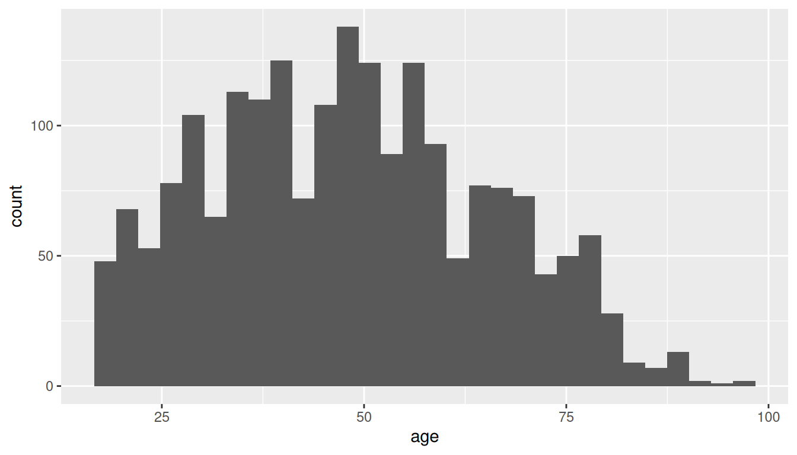
Pour représenter une autre variable, il suffit de changer la valeur de x :
ggplot(d) + geom_histogram(aes(x = heures.tv))`stat_bin()` using `bins = 30`. Pick better value `binwidth`.Warning: Removed 5 rows containing non-finite outside the scale range
(`stat_bin()`).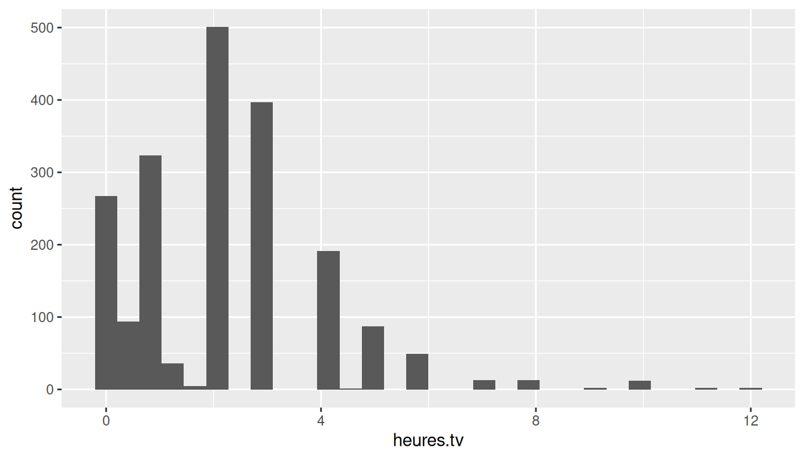
R affiche cette fois un avertissement (warning), qui signale que des lignes ont été écartées : ce sont les valeurs manquantes. Un avertissement n’est pas une erreur : le graphique est bien produit. Mais lisez-le, car il vous dit combien d’observations ne sont pas représentées.
En résumé
Pour faire un graphique, il faut trois choses :
- des données : l’argument de
ggplot(); - un type de représentation : une fonction
geom_...(); - une ou des variables : l’argument
aes().
On relie ces éléments avec l’opérateur +.
Avertissement
Dans un graphique, on enchaîne les éléments avec +, et non avec |>. Si vous utilisez |> par erreur, R vous le signale par un message qui se termine par Did you use %>% or |> instead of +?
Représenter une variable
Une variable quantitative : l’histogramme
L’histogramme découpe une variable quantitative en intervalles, et représente par une barre le nombre d’observations dans chacun. L’argument bins contrôle le nombre d’intervalles. Comparez :
ggplot(d) +
geom_histogram(aes(x = age), bins = 10)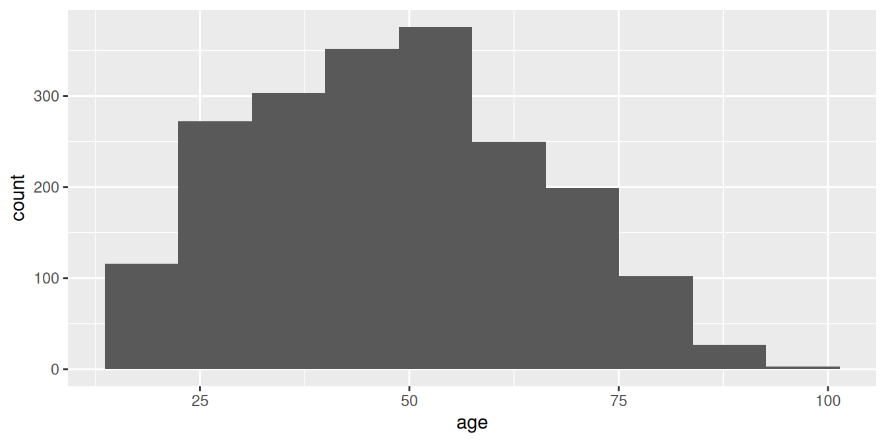
ggplot(d) +
geom_histogram(aes(x = age), bins = 50)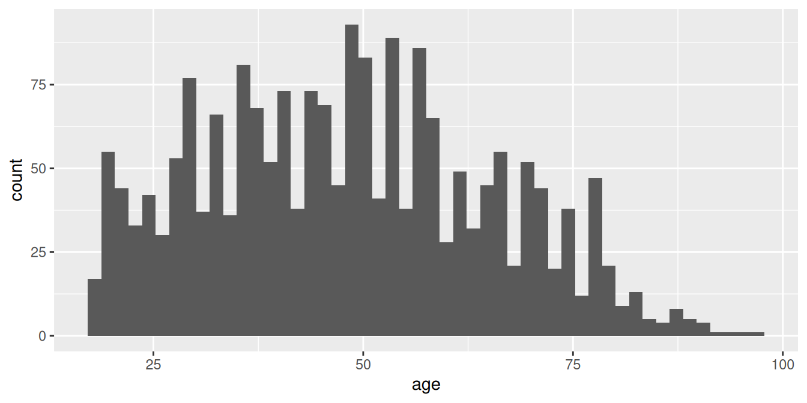
Avec 10 intervalles, la distribution paraît régulière ; avec 50, des irrégularités apparaissent. Aucun des deux n’est « le bon » : le nombre d’intervalles change ce que vous voyez.
Avertissement
Choisissez un découpage adapté à ce que vous étudiez, et essayez-en toujours plusieurs avant de conclure quoi que ce soit sur la forme d’une distribution.
Une variable qualitative : le diagramme en barres
Pour une variable qualitative, on utilise geom_bar(), qui dessine une barre par modalité :
ggplot(d) + geom_bar(aes(x = qualif))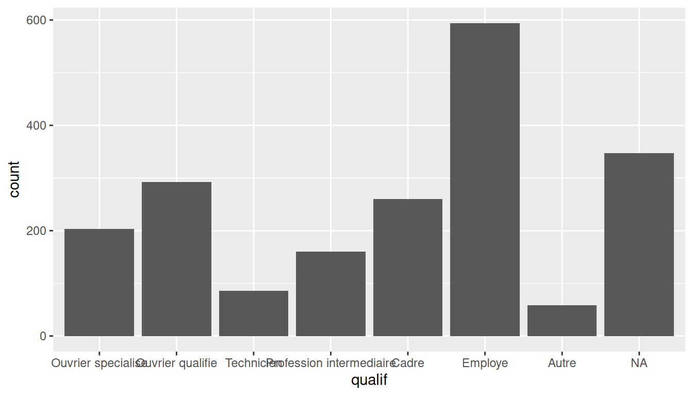
geom_bar() compte lui-même les effectifs : c’est l’équivalent graphique du count() du chapitre précédent. Comme count(), il fait apparaître les valeurs manquantes sous la forme d’une barre NA.
Les étiquettes se chevauchent : les noms des modalités sont trop longs pour tenir sous les barres. La solution la plus simple est d’inverser les axes, en passant la variable en y :
ggplot(d) + geom_bar(aes(y = qualif))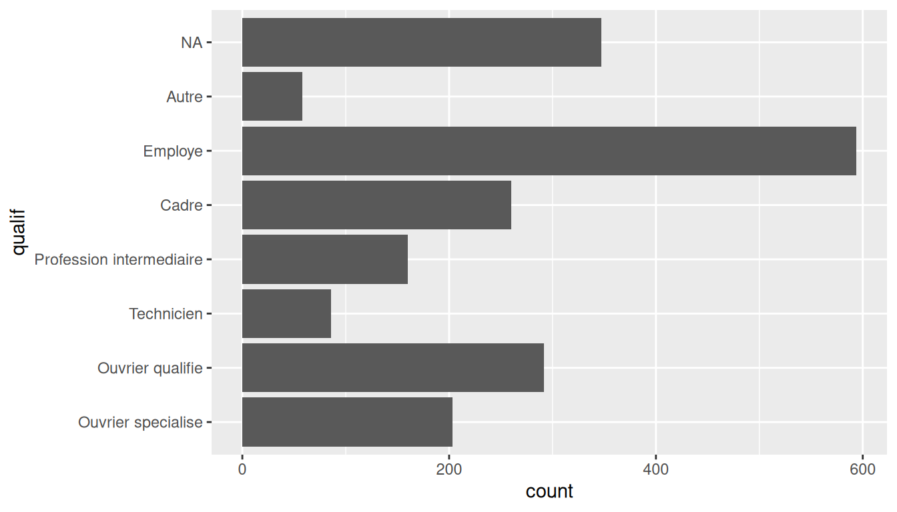
Exercice 1
- Représentez la distribution du nombre de frères et sœurs (
freres.soeurs). - Faites un diagramme en barres de la variable
relig. Comparez avec lecount()du chapitre précédent. - Représentez la distribution de l’âge avec 5, puis 20, puis 100 intervalles. Que voyez-vous apparaître, et que voyez-vous disparaître ?
La question 3 est la plus importante : un graphique est le résultat de choix, pas une simple photographie des données.
NoteCorrection
ggplot(d) + geom_bar(aes(x = freres.soeurs))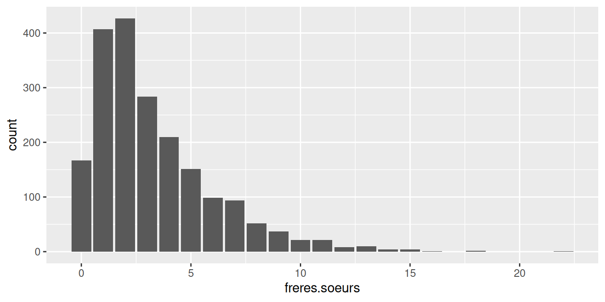
freres.soeurs ne prend que des valeurs entières, et peu nombreuses : un diagramme en barres donne une barre par valeur. Un histogramme avec binwidth = 1 donnerait le même résultat. La plupart des enquêtés ont un ou deux frères et sœurs, mais la distribution s’étire jusqu’à 22.
ggplot(d) + geom_bar(aes(y = relig))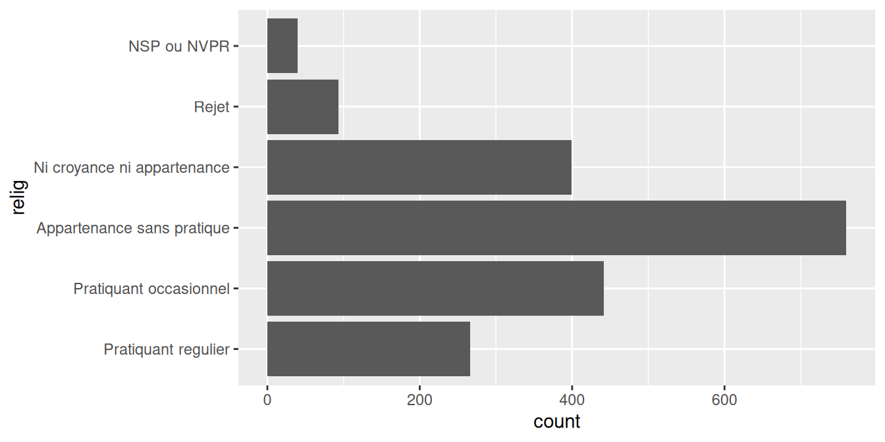
Les longueurs des barres sont les effectifs du count(relig) du chapitre précédent.
ggplot(d) + geom_histogram(aes(x = age), bins = 5)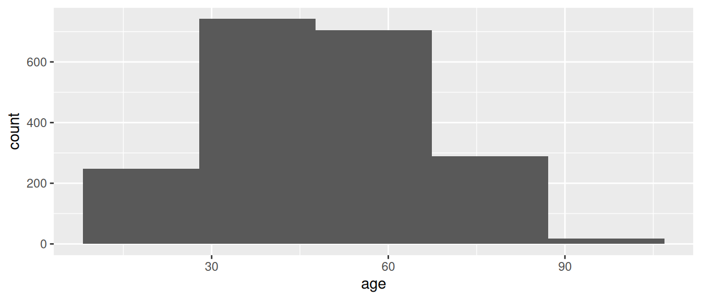
ggplot(d) + geom_histogram(aes(x = age), bins = 20)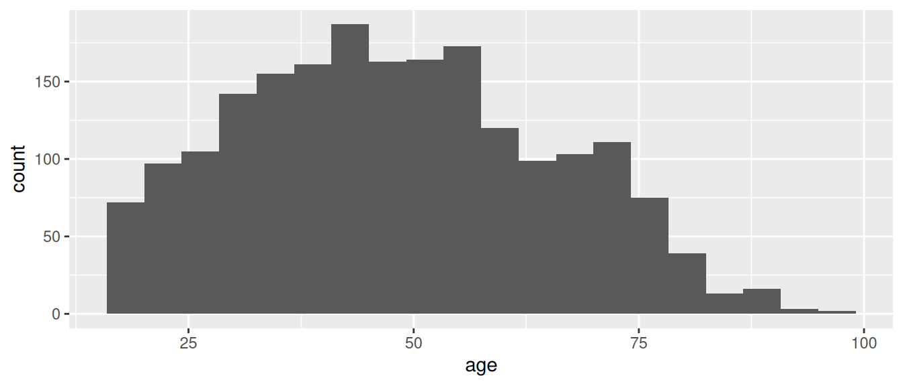
ggplot(d) + geom_histogram(aes(x = age), bins = 100)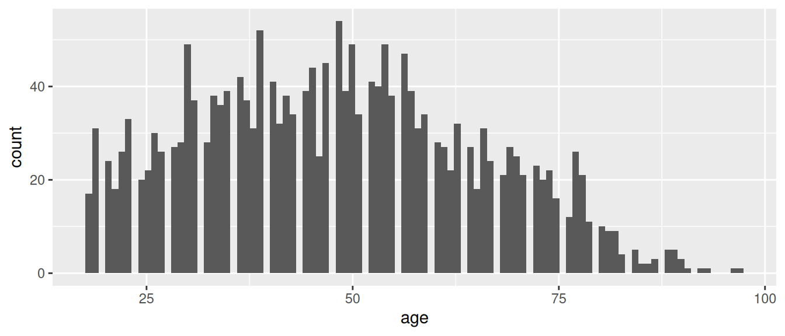
Avec 5 intervalles, on ne voit plus qu’une masse grossière : la forme de la distribution disparaît. Avec 100 intervalles, des trous apparaissent : les âges sont des nombres entiers, entre 18 et 97 ans, et il y a plus d’intervalles que de valeurs possibles. Ces trous ne disent rien des enquêtés, ils viennent du découpage. Avec 20 intervalles, on lit la forme générale sans ces artefacts.
Croiser deux variables
Nuage de points
Pour croiser deux variables quantitatives, on utilise geom_point(), qui place un point par observation. Il lui faut une variable en x et une variable en y :
ggplot(d) + geom_point(aes(x = age, y = heures.tv))Warning: Removed 5 rows containing missing values or values outside the scale range
(`geom_point()`).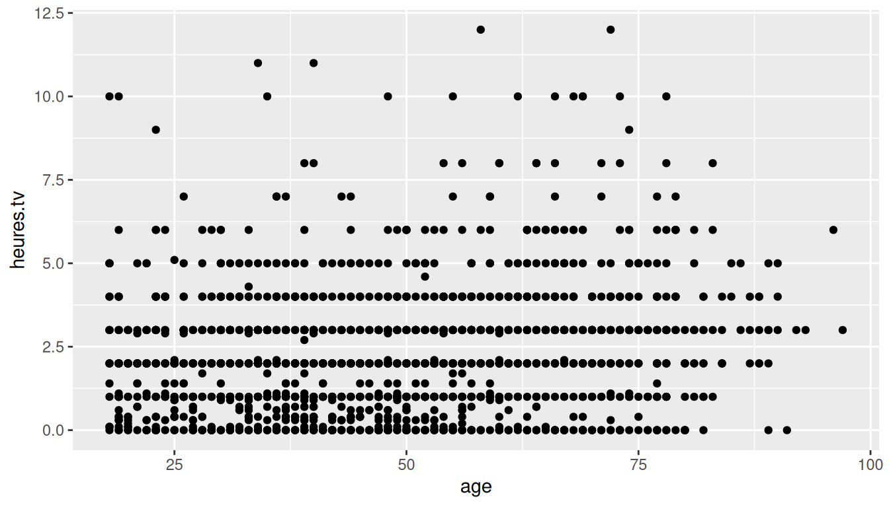
Le problème des points superposés
Ce graphique est trompeur. Il y a 2000 observations, mais beaucoup d’entre elles se superposent exactement : l’âge et les heures de télévision sont des nombres entiers, ou presque, et de nombreux enquêtés partagent les mêmes valeurs. Impossible de savoir où se concentrent les enquêtés.
Deux réglages rendent la densité visible. La transparence, réglée par l’argument alpha entre 0 (invisible) et 1 (opaque), fait apparaître plus foncées les zones où les points s’accumulent. geom_jitter() remplace geom_point() et décale légèrement chaque point au hasard, pour que les points superposés se séparent.
ggplot(d) + geom_jitter(aes(x = age, y = heures.tv), alpha = 0.15)Warning: Removed 5 rows containing missing values or values outside the scale range
(`geom_point()`).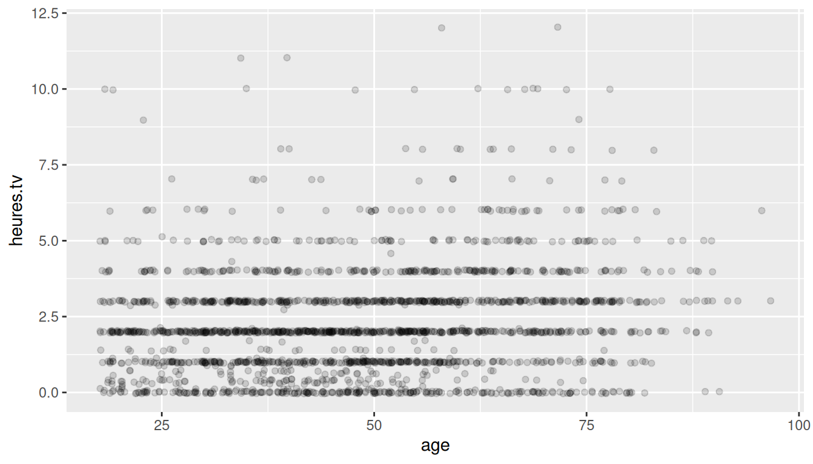
Important
Le premier graphique n’était pas faux, il était illisible. Un graphique peut cacher l’information aussi bien qu’un tableau.
Une variable quantitative selon une qualitative : la boîte à moustaches
Pour comparer la distribution d’une variable quantitative entre les modalités d’une variable qualitative, on utilise la boîte à moustaches, avec geom_boxplot() :
ggplot(d) + geom_boxplot(aes(x = sexe, y = heures.tv))Warning: Removed 5 rows containing non-finite outside the scale range
(`stat_boxplot()`).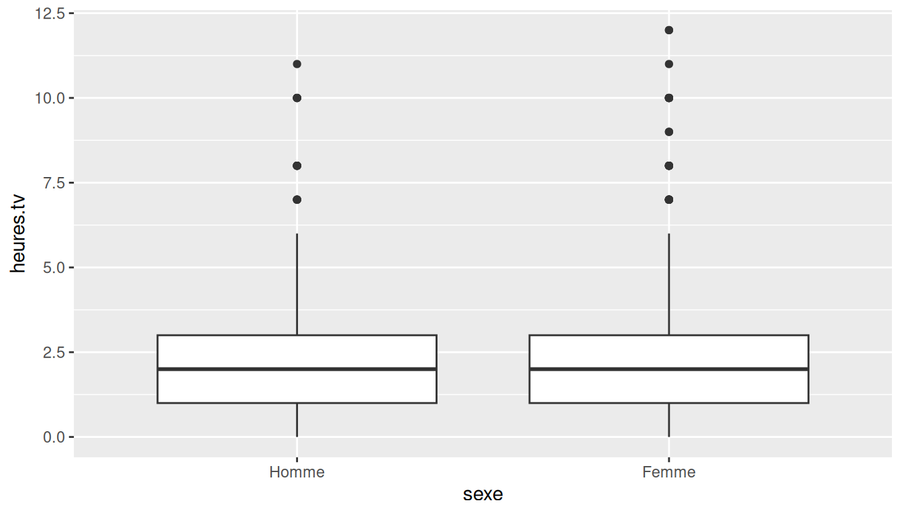
Une boîte à moustaches se lit ainsi :
- le trait épais au milieu de la boîte est la médiane ;
- la boîte va du premier au troisième quartile : elle contient la moitié centrale des observations ;
- les moustaches s’étendent jusqu’aux valeurs les plus extrêmes, dans la limite d’une fois et demie la hauteur de la boîte ;
- les points au-delà des moustaches sont affichés individuellement : ce sont les valeurs atypiques.
Ce sont exactement les quartiles calculés au chapitre précédent avec quantile(). La boîte en est la traduction visuelle.
La boîte à moustaches est particulièrement utile pour comparer de nombreux groupes. Ici encore, on met la variable qualitative en y pour que les étiquettes restent lisibles :
ggplot(d) + geom_boxplot(aes(x = heures.tv, y = qualif))Warning: Removed 5 rows containing non-finite outside the scale range
(`stat_boxplot()`).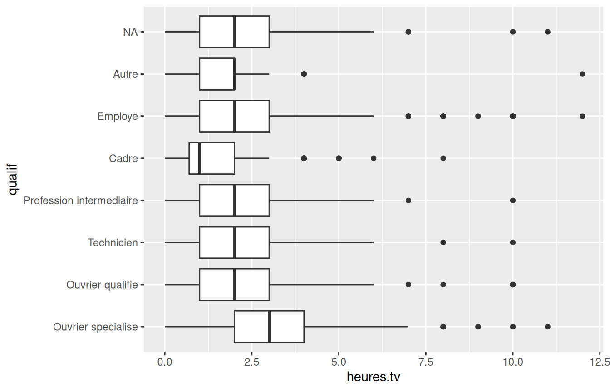
Comparez avec le tableau group_by(qualif) |> summarise(...) du chapitre précédent : c’est la même information, mais la dispersion de chaque groupe devient visible.
Mappages
Relier un attribut à une variable
Un mappage met en relation un attribut graphique (la position, la couleur, la taille, la transparence…) et une variable du tableau. Les arguments x et y que nous avons utilisés jusqu’ici sont des mappages : ils relient la position horizontale et verticale à des variables. Tous les mappages se déclarent dans aes().
Par exemple, l’argument color relie la couleur des points à une variable :
ggplot(d) +
geom_jitter(aes(x = age, y = heures.tv, color = sexe), alpha = 0.3)Warning: Removed 5 rows containing missing values or values outside the scale range
(`geom_point()`).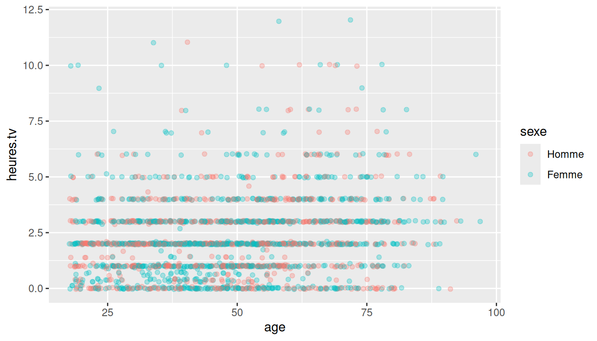
R choisit les couleurs et ajoute une légende automatiquement. On peut de la même manière relier la taille des points à une variable avec size :
ggplot(d) +
geom_jitter(
aes(x = age, y = heures.tv, color = sexe, size = freres.soeurs),
alpha = 0.3
)Warning: Removed 5 rows containing missing values or values outside the scale range
(`geom_point()`).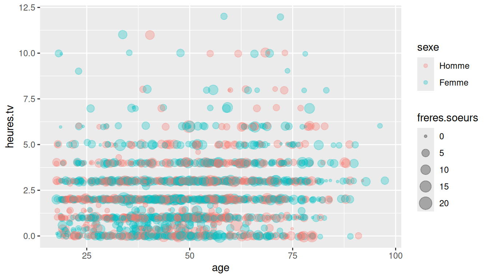
Chaque géométrie a sa propre liste de mappages possibles, indiquée dans sa page d’aide (rubrique Aesthetics).
aes() ou pas aes() ?
On veut parfois fixer un attribut sans le relier à une variable : mettre tous les points en rouge, par exemple. On utilise alors le même argument color, mais en dehors de aes() :
ggplot(d) +
geom_jitter(
aes(x = age, y = heures.tv),
color = "darkred", alpha = 0.2
)Warning: Removed 5 rows containing missing values or values outside the scale range
(`geom_point()`).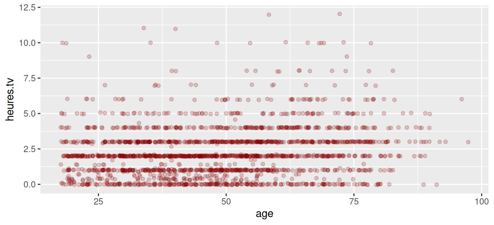
Comparez avec le graphique où color est dans aes() :
ggplot(d) +
geom_jitter(
aes(x = age, y = heures.tv,
color = sexe),
alpha = 0.2
)Warning: Removed 5 rows containing missing values or values outside the scale range
(`geom_point()`).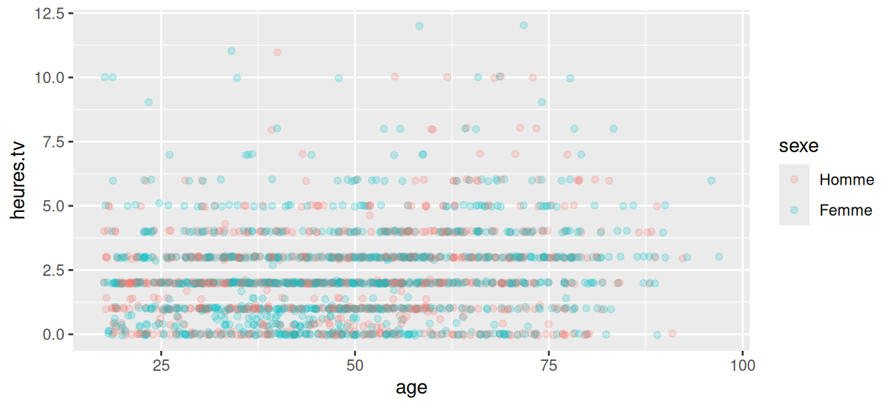
C’est pour la même raison que alpha est placé en dehors de aes() depuis le début : la transparence est la même pour tous les points.
Important
Si l’attribut dépend d’une variable, il va dans aes().
Si l’attribut est le même pour tous les points, il va en dehors de aes().
On peut mélanger les deux. Ici, la taille dépend d’une variable, et la couleur est la même pour tous :
ggplot(d) +
geom_jitter(aes(x = age, y = heures.tv, size = freres.soeurs), color = "royalblue", alpha = 0.2)Warning: Removed 5 rows containing missing values or values outside the scale range
(`geom_point()`).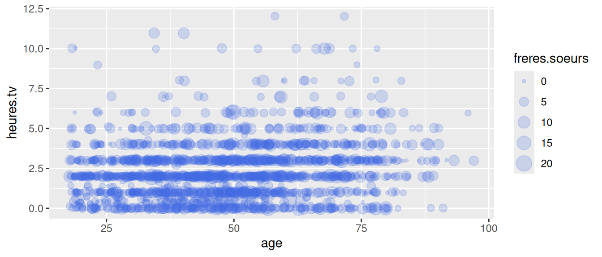
Une erreur classique
Que se passe-t-il si l’on place une couleur fixe dans aes() ?
ggplot(d) + geom_jitter(aes(x = age, y = heures.tv, color = "darkred"))Warning: Removed 5 rows containing missing values or values outside the scale range
(`geom_point()`).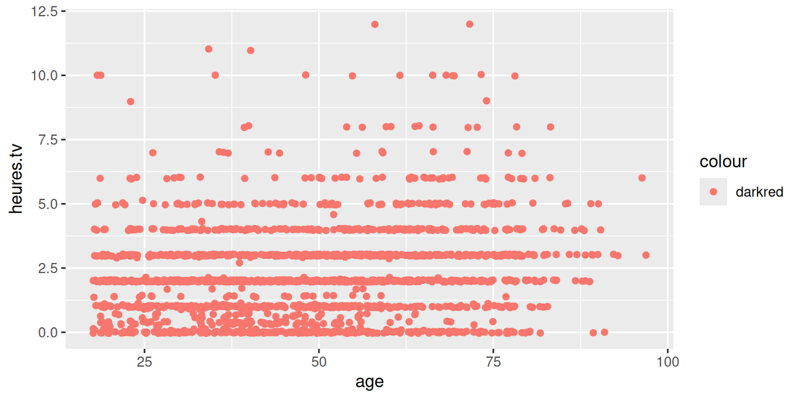
Les points ne sont pas rouges. Placé dans aes(), color est interprété comme un mappage : R comprend qu’il faut colorer les points selon une variable qui vaudrait « darkred » pour tout le monde. Il crée donc un groupe unique, lui attribue la première couleur de sa palette, et ajoute une légende absurde. Aucun message d’erreur ne vous prévient : c’est le graphique lui-même qu’il faut regarder.
Superposer et découper
Plusieurs géométries
On peut superposer plusieurs géométries en les ajoutant avec +. Pour éviter de répéter les mêmes mappages dans chacune, on les déclare une fois pour toutes dans ggplot() : ils s’appliquent alors à toutes les géométries.
ggplot(d, aes(x = sexe, y = heures.tv)) +
geom_boxplot() +
geom_jitter(color = "red", alpha = 0.1)Warning: Removed 5 rows containing non-finite outside the scale range
(`stat_boxplot()`).Warning: Removed 5 rows containing missing values or values outside the scale range
(`geom_point()`).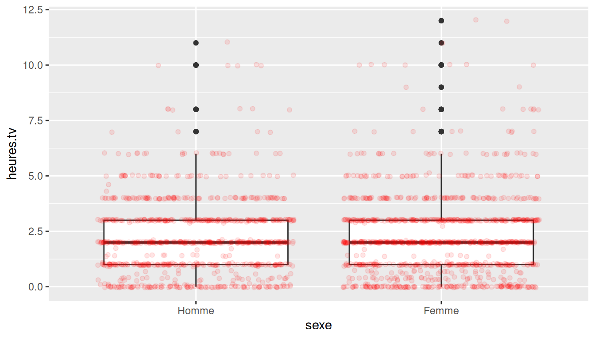
Quand une commande devient longue, répartissez-la sur plusieurs lignes en plaçant le + en fin de ligne. Comme pour |>, c’est ce qui indique à R que la commande continue. Si le + est placé au début de la ligne suivante, R exécute la première ligne seule, puis vous signale une erreur sur la seconde.
Ajouter une tendance
geom_smooth() ajoute une courbe de tendance. Avec method = "lm", c’est une droite de régression linéaire :
ggplot(d, aes(x = age, y = heures.tv)) +
geom_jitter(alpha = 0.15) +
geom_smooth(method = "lm")`geom_smooth()` using formula = 'y ~ x'Warning: Removed 5 rows containing non-finite outside the scale range
(`stat_smooth()`).Warning: Removed 5 rows containing missing values or values outside the scale range
(`geom_point()`).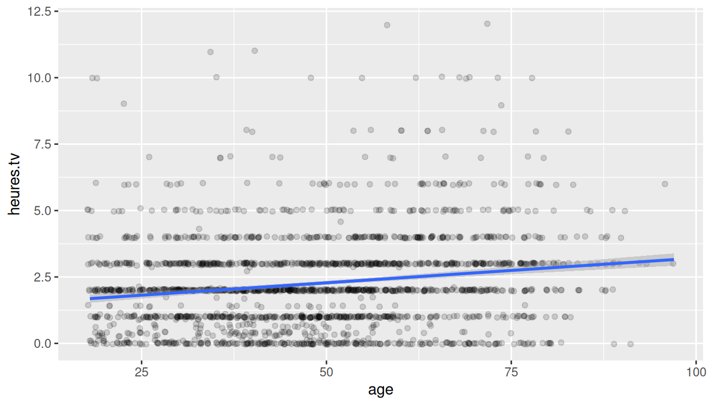
Vous retrouverez la régression linéaire en économétrie. Ici, elle sert seulement à visualiser une tendance générale.
Découper en sous-graphiques
facet_wrap() répète le même graphique pour chaque modalité d’une variable. Le nom de la variable est précédé d’un ~ :
ggplot(d, aes(x = age, y = heures.tv)) +
geom_jitter(alpha = 0.2) +
facet_wrap(~ sexe)Warning: Removed 5 rows containing missing values or values outside the scale range
(`geom_point()`).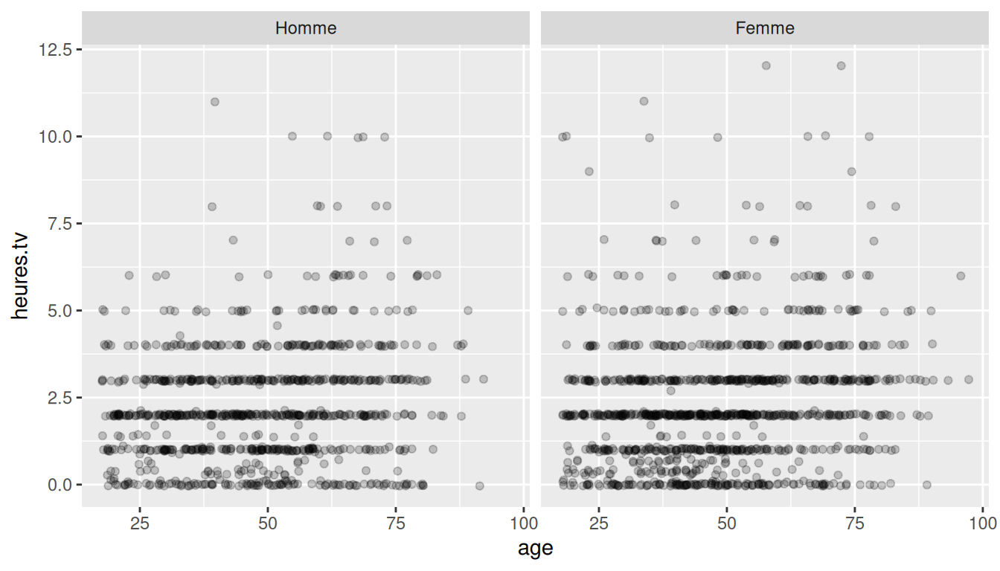
C’est l’équivalent graphique du group_by() du chapitre précédent.
Mise en forme
Les échelles
Les échelles (scales) contrôlent la façon dont un attribut est relié aux valeurs d’une variable : l’étendue d’un axe, les couleurs utilisées, l’affichage de la légende… Elles s’ajoutent avec +, et leur nom suit le modèle scale_<attribut>_<type>. Par exemple, pour fixer l’étendue des deux axes :
ggplot(d) +
geom_jitter(aes(x = age, y = heures.tv), alpha = 0.15) +
scale_x_continuous(limits = c(18, 100)) +
scale_y_continuous(limits = c(0, 12))Warning: Removed 134 rows containing missing values or values outside the scale range
(`geom_point()`).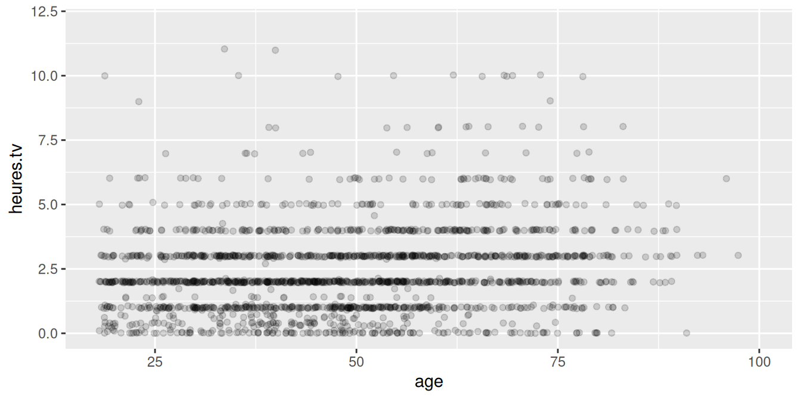
Attention : les observations situées en dehors des limites sont retirées du graphique. R le signale par un avertissement, qu’il faut lire.
Titres et étiquettes
labs() règle tous les textes du graphique en une seule fois : titre, sous-titre, noms des axes et titres des légendes.
ggplot(d) +
geom_jitter(aes(x = age, y = heures.tv, color = sexe), alpha = 0.3) +
labs(
title = "Télévision et âge",
subtitle = "Enquête Histoire de vie, INSEE, 2003",
x = "Âge (années)",
y = "Heures de télévision par jour",
color = "Sexe"
)Warning: Removed 5 rows containing missing values or values outside the scale range
(`geom_point()`).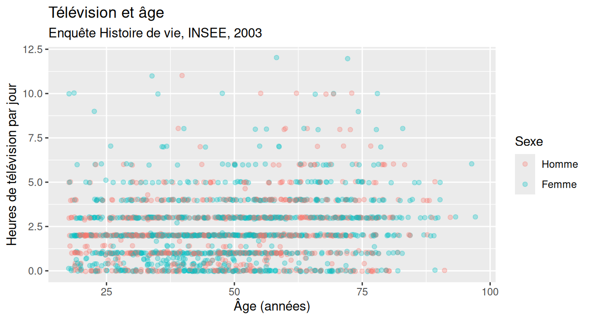
Thèmes
Les thèmes modifient l’apparence générale du graphique : fond, quadrillage, polices.
ggplot(d) +
geom_bar(aes(y = qualif)) +
labs(x = "Effectif", y = NULL) +
theme_minimal()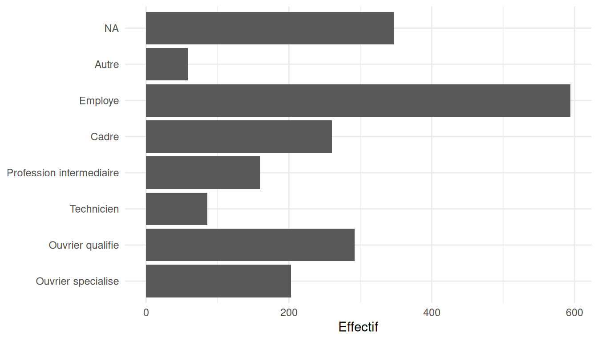
Essayez aussi theme_bw(), theme_classic() et theme_light().
Un graphique lisible
Un graphique est destiné à être lu par quelqu’un d’autre que vous. Quatre règles le rendent lisible :
- des axes nommés, en français, avec l’unité :
heures.tvn’est pas un titre d’axe ; - la source des données, en sous-titre ou en légende ;
- pas de décoration inutile : les couleurs doivent porter une information, sinon elles distraient ;
- le nombre d’observations représentées, surtout si des valeurs manquantes ont été écartées.
Enregistrer un graphique
ggsave() enregistre le dernier graphique affiché dans un fichier, placé dans votre dossier de travail. Le format est déduit de l’extension du nom de fichier, et les dimensions sont en pouces :
ggsave("tv_age.png", width = 8, height = 5)À vous
Exercice 2
Dans un script commenté :
- Représentez la distribution de l’âge selon le sexe, avec des boîtes à moustaches.
- Faites un diagramme en barres lisible du niveau d’études (
nivetud). - Le nombre d’heures de télévision diffère-t-il selon que l’on pratique un sport ou non ? Représentez-le, puis comparez avec le tableau correspondant du chapitre précédent.
- Reprenez le nuage de points âge / heures de télévision, découpez-le selon la qualification avec
facet_wrap(), et donnez-lui un titre et des axes nommés.
Pour chaque graphique, écrivez en commentaire ce que vous y lisez. Un graphique sans lecture ne sert à rien.
NoteCorrection
# Les deux distributions sont presque identiques : médiane de 48 ans
# pour les hommes, 47 pour les femmes, mêmes quartiles.
ggplot(d) + geom_boxplot(aes(x = sexe, y = age))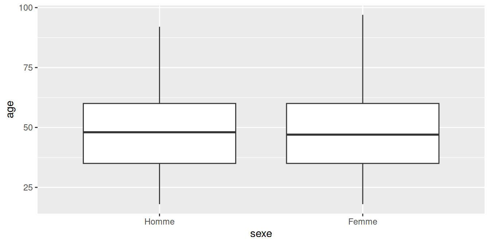
# Les niveaux les plus fréquents sont l'enseignement technique court
# et l'enseignement supérieur.
ggplot(d) +
geom_bar(aes(y = nivetud)) +
labs(x = "Effectif", y = NULL, title = "Niveau d'études des enquêtés")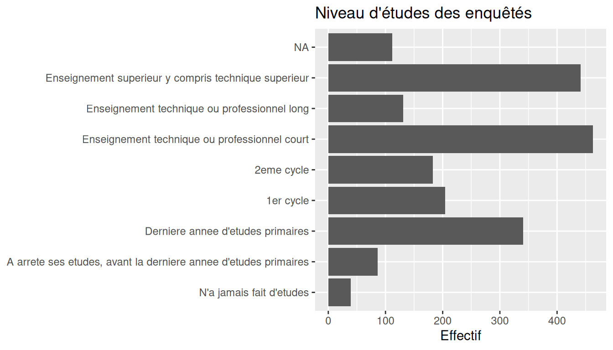
ggplot(d) +
geom_boxplot(aes(x = sport, y = heures.tv)) +
labs(x = "Pratique un sport", y = "Heures de télévision par jour")Warning: Removed 5 rows containing non-finite outside the scale range
(`stat_boxplot()`).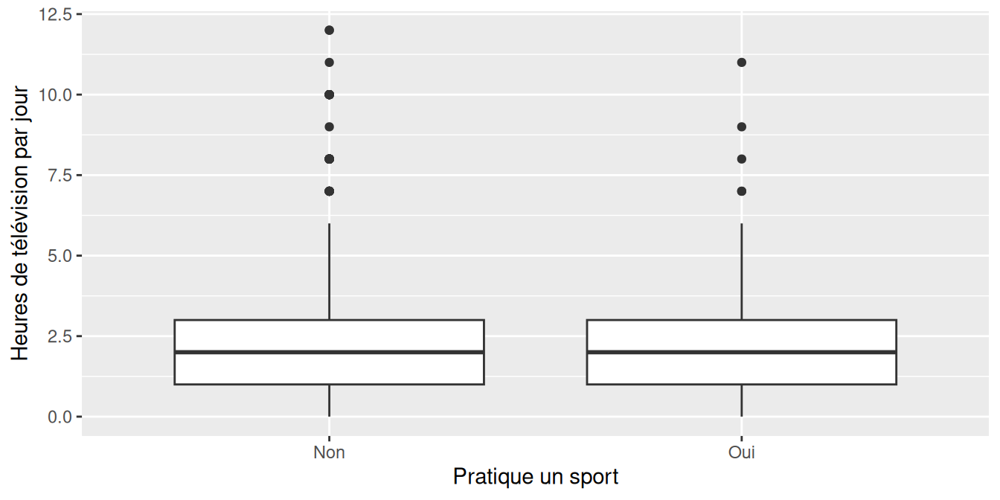
Les deux boîtes sont identiques : même médiane (2 heures), mêmes quartiles (1 et 3 heures). Pourtant, au chapitre précédent, la moyenne était de 2,5 heures pour les non-sportifs et de 1,8 heure pour les sportifs. Les déclarations se concentrent sur des heures rondes, et les quartiles tombent sur les mêmes valeurs dans les deux groupes : la boîte ne montre pas la différence que la moyenne révèle. Un graphique peut cacher une différence aussi bien qu’un tableau : il faut confronter les deux.
ggplot(d) +
geom_jitter(aes(x = age, y = heures.tv), alpha = 0.15) +
facet_wrap(~ qualif) +
labs(
title = "Âge et télévision selon la qualification",
x = "Âge (années)",
y = "Heures de télévision par jour"
)Warning: Removed 5 rows containing missing values or values outside the scale range
(`geom_point()`).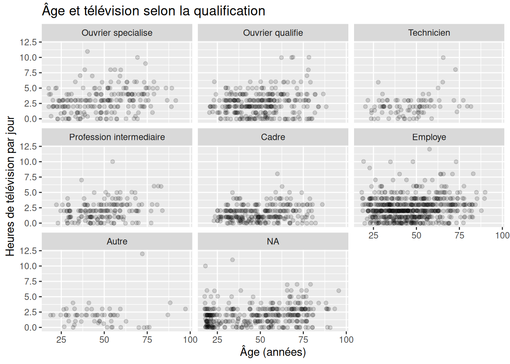
Chaque panneau correspond à une qualification ; le panneau NA regroupe les personnes dont la qualification n’est pas renseignée, en majorité sans emploi.
Les leçons swirl
library(swirl)
swirl()Faites la leçon Representations_graphiques et déposez le fichier .txt sur Moodle. Si vous bloquez sur une question, voir Si vous êtes bloqués.
Si vous voulez pratiquer davantage, la leçon facultative Exercice_5 reprend le nuage de points, la boîte à moustaches et le diagramme en barres. Voir LECONS_OPTIONNELLES.md.
Ressources
L’antisèche ggplot2 résume l’essentiel en deux pages. Elle est aussi accessible depuis RStudio : Help > Cheatsheets > Data visualization with ggplot2.
La documentation officielle donne la liste complète des géométries, avec un exemple pour chacune.
Le chapitre Data visualisation de R for Data Science est une bonne introduction complémentaire, en anglais.
La suite
Avant de passer au chapitre suivant, terminez la leçon swirl et déposez-la sur Moodle.
Le chapitre 5 est un projet : une analyse complète de votre choix sur l’enquête Histoire de vie. Pour vous y préparer, choisissez dès maintenant deux ou trois questions auxquelles vous aimeriez répondre avec ces données, et écrivez-les. Le chapitre suivant vous aidera à les préciser.
Références
Barnier, Julien, et Mayeul Kauffmann. 2023. "Introduction à R et au tydiverse". Version v2023-05-02. Zenodo, released. https://doi.org/10.5281/zenodo.6382598.